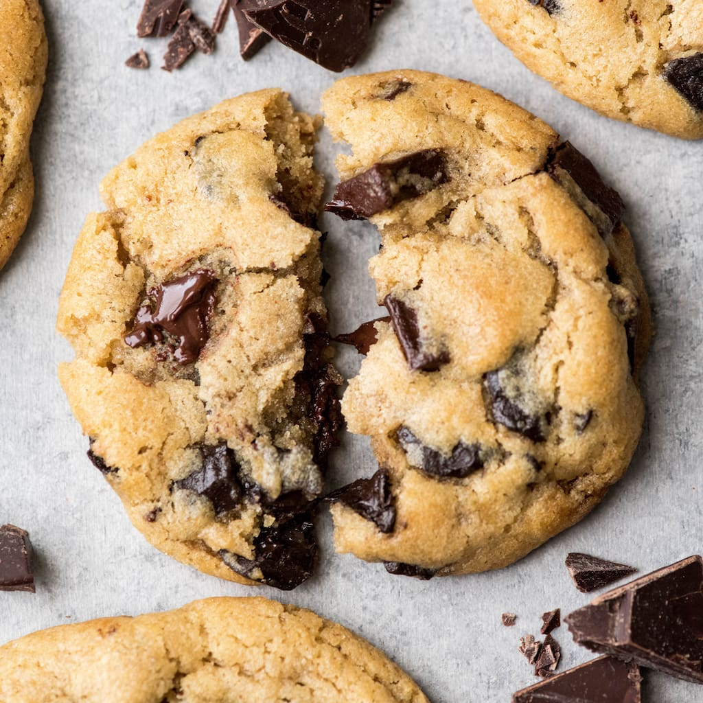

Stephens choc-chip cookie recipe
29/12/18
Everyone needs a classic chocolate chip cookie recipe,
and this is mine. It is seriously the Best Chocolate Chip Cookie Recipe Ever!
I have been making these for many years and everyone who tries them agrees they’re delicious!
These are everything a chocolate chip cookie should be. Crispy and chewy. Doughy yet fully baked.

Makes 2-3 dozen
INGREDIENTS
1/2 cup (1 stick) butter, softened
1/2 cup firmly packed brown sugar
1/4 cup granulated sugar
1 egg
1/2 teaspoon vanilla extract
3/4 cups flour
1/2 teaspoon baking soda
1/2 teaspoon cinnamon
1/4 teaspoon salt
1 and 1/2 cups oats
1 cup chocolate chips
INSTRUCTIONS
PREHEAT oven to 180°C/350°F
BEAT butter and sugars until creamy.
ADD the egg and vanilla; beat well.
ADD combined flour, baking soda, cinnamon and salt, mix well.
STIR IN chocolate chips and oats, mix well.
DROP by rounded tablespoons onto ungreased baking sheets.
BAKE for 10 to 12 minutes.
COOL on baking sheets for 1 minute; remove to wire rack.
Images:
